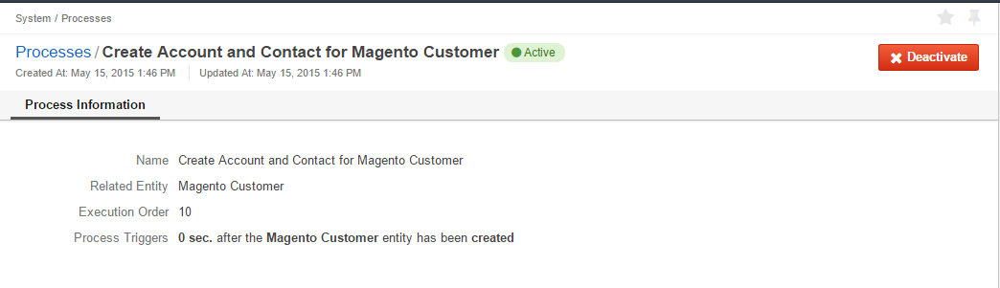

Some actions in OroCommerce trigger other actions. This behaviour is pre-defined at the background and can be modified in the course of the system integration. Mostly, these actions are related to OroCommerce extensions.
You can view and activate/deactivate the process in OroCommerce:
To view the processes, navigate to the System > Processes in the main menu.
The All Processes page contains the following details:
| Name | Description |
|---|---|
| NAME | Defines the process available in the system. |
| RELATED ENTITY | Oro application entity, records of which are influenced by the process. |
| EXECUTION ORDER | Priority of the process execution. The smaller is the number, the higher is the priority. If several processes have been triggered simultaneously, the processes with a higher priority are executed first. |
| ENABLED | If set to Yes, the process will be executed. |
| CREATED AT | Date and time when the process was added to the system. |
Click the View next to the process to see the general process details and the Process Triggers, i.e. in response to what event and with what delay the process starts.
To enabling/disabling the process, use the Activate and Deactivate buttons on process page or the and icons on the All Processes page.